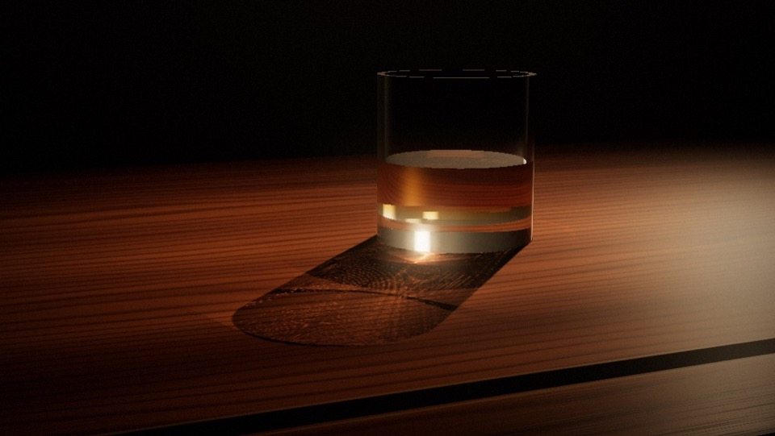
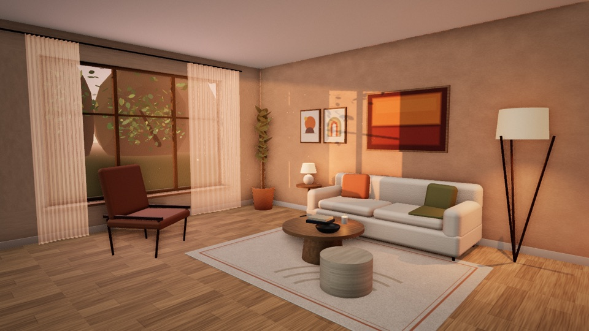
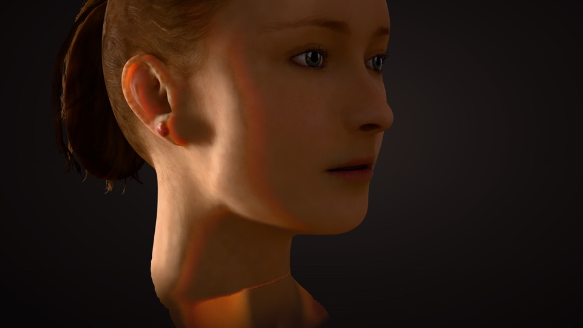

frame 01
Whiskey Caustics
The whiskey glass from Final Fantasy: The Spirits Within. Pick it up, shake it, and watch the light swirl on the desk.

frame 02
Light Study
A desert villa living room, path traced in the browser. Turn the dials to move the sun, then let go and watch it resolve into a photoreal render.

frame 03
Skin Study
Three ways to light a face: flat polygons, texture and bump maps, and subsurface scattering gathered from a cloud of photons. Put the light behind her ear.
frame 04 · empty